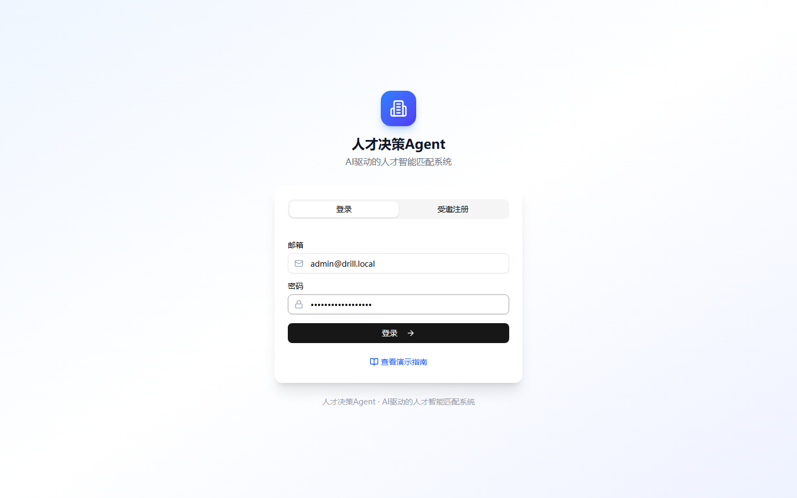
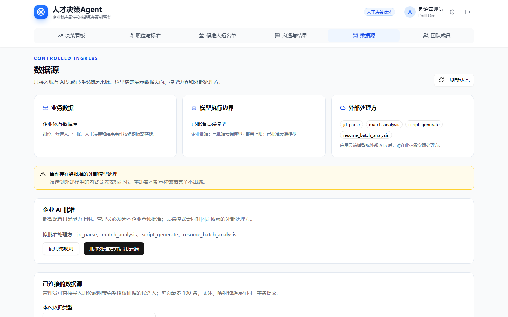
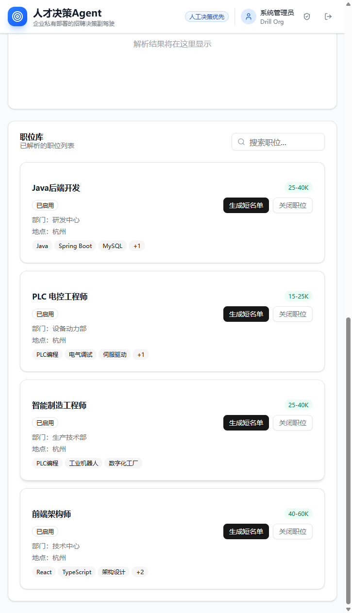
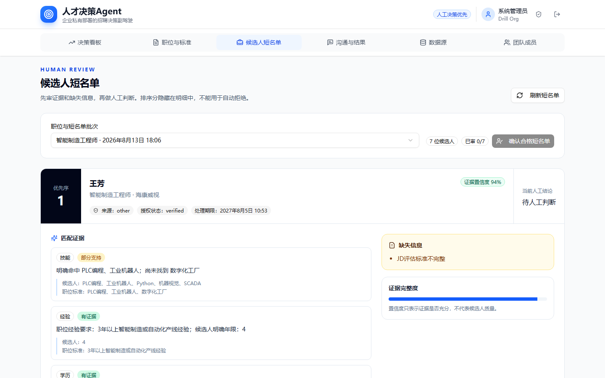
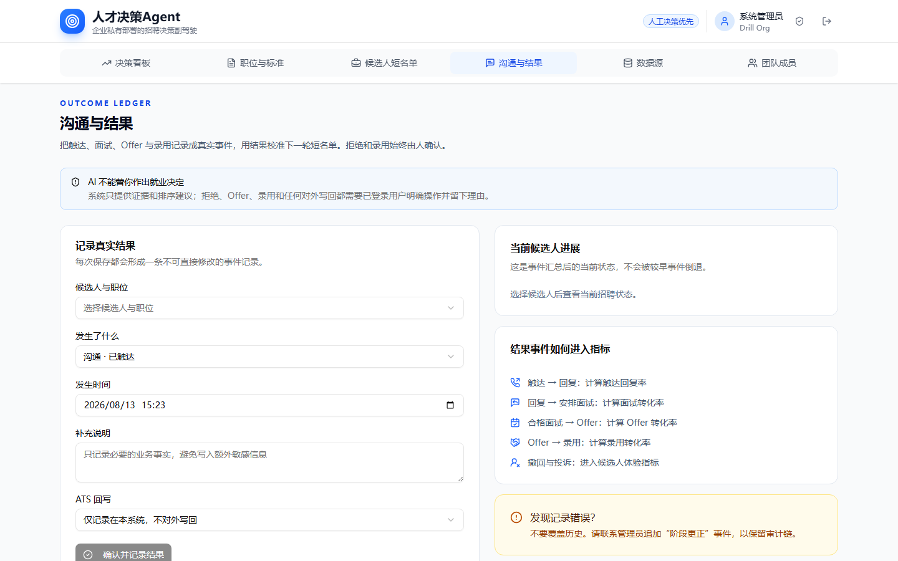
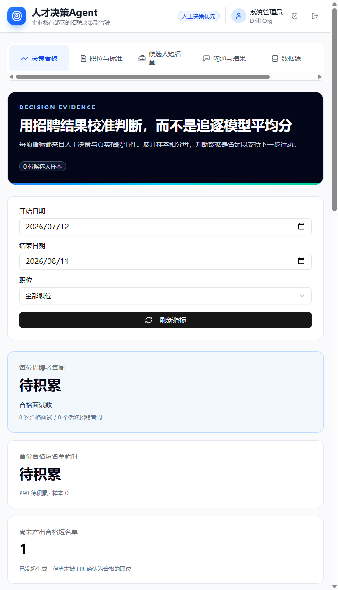

GOAI · AI+工业制造 · PUBLIC DEMO GUIDE
人才决策Agent
傻瓜式操作手册
从登录到完成一次“职位标准 → 证据短名单 → 人工决策 → 结果复盘”闭环
一句话理解 系统负责整理证据、指出缺口和辅助排序；是否联系、面试、拒绝、发 Offer 或录用，始终由人决定。
版本 V1.2 | 2026-08-13
演示环境仅使用虚构或已去标识化数据
这套系统如何帮 HR 提高工作效率
给评审员的回答 传统招聘里，HR 的时间大量花在“整理信息”上：读 JD 摘要点、逐份翻简历找差距、凭印象排序、现写沟通话术、翻聊天记录做复盘。这套系统把这些整理工作交给规则和 AI，把“做判断”留给 HR。下表是每个环节的对比（演示环境估算，非承诺指标）：
| 招聘环节 | 传统做法（痛点） | 本系统的做法 |
|---|---|---|
| 读懂 JD、定筛选标准 | 手动摘要点、口头同步，换人就重来 | 结构化“职位标准”一次定义、多批次复用；AI 解析 JD 生成标准卡片 |
| 初筛简历 | 逐份通读、靠记忆比较，容易漏项 | 逐项核对证据：有证据 / 部分支持 / 缺少证据 / 信息冲突，缺失项一眼可见 |
| 排序与比较 | 凭印象或 Excel 手工排 | 排序分数 + 证据置信度自动给出浏览顺序，依据可展开查看 |
| 写沟通话术 | 现想现写，每人一份 | 一键生成待审核草稿，附“需人工核验的事实”，改完即用，不自动发送 |
| 记录与复盘 | 散在聊天记录 / Excel，复盘靠回忆 | 结果事件全程留痕，看板自动统计可追溯事件与人工覆盖原因 |
省下的时间去哪了？三个具体例子（演示口径）：
筛简历：10 份简历筛出 3 人进短名单，传统做法约 2 小时（逐份通读+手工比对），本系统约 15 分钟（证据标注直接指出缺失项）。
写话术：给 3 位候选人写差异化沟通内容，传统约 40 分钟，本系统约 5 分钟（草稿 + 事实核验清单，人工审核后使用）。
做复盘：季度复盘“哪些候选人被拒、为什么”，传统翻半天记录，本系统在看板 1 分钟内完成（按职位筛选 + 可追溯事件）。
效率的本质 系统把隐性工作自动化（摘要点、找缺口、写话术、翻记录），决策责任留在人手里。HR 的时间从“找信息”转向“做判断”，同时每一步判断都留下可审计的证据。
先看这一页：5 分钟就能完成体验
推荐路线 直接使用预置职位和已有短名单，不注册账号、不上传简历、不配置模型，也能看到核心价值。本手册演示的是评审快捷路线（预置职位+预置短名单）；HR 日常使用从“输入岗位要求、上传简历”开始，两者对照见本节“两种路线”。
访问资料（部署后填写）
| 项目 | 内容 |
|---|---|
| 系统地址 | 【部署后填写，例如：https://demo.example.com】 |
| 演示指南 | 【系统地址】/demo-guide.html |
| 演示账号 | 【部署后填写专用评审账号】 |
| 演示密码 | 【部署后填写；评审期间保持有效】 |
| 推荐环境 | 桌面版 Chrome / Edge；建议宽度 1280 像素以上 |
| 数据说明 | 全部为虚构演示数据；请勿录入真实候选人信息 |
上线前必须处理 不要把开发环境默认账号或简单密码放到公网。应创建专用评审账号，并确保登录后不会要求首次改密或双重验证。
两种路线：评审演示 vs HR 日常使用
本手册的 5 分钟路线为了零门槛评审，直接使用预置职位与预置短名单，跳过岗位录入与简历上传两步。产品面向 HR 的日常使用则从这两步开始，后续环节与演示完全一致。
HR 日常使用的完整流程：
① 输入岗位要求（JD 智能解析 / 手工定义职位标准）→ ② 上传或导入简历（候选人库，授权可撤回）→ ③ 智能匹配（规则预筛 + LLM 深度分析）→ ④ 证据短名单 → ⑤ 人工决策（接受 / 补充 / 覆盖，留痕）→ ⑥ 沟通话术（待审核草稿，不自动发送）→ ⑦ 结果记录与看板复盘。
| 环节 | 评审演示路线（本手册） | HR 日常使用路线 |
|---|---|---|
| 岗位标准 | 使用预置的制造业职位（已启用） | 输入 JD 由 AI 解析，或手工定义职位标准 |
| 候选人 | 使用预置短名单批次 | 录入候选人 / 批量导入简历（授权与权利可管理） |
| 匹配与短名单 | 打开已有批次直接查看证据 | 生成匹配与批量预筛，得到证据化短名单 |
| 决策 / 沟通 / 结果 / 看板 | 与日常一致（核心体验） | 与演示一致 |
为什么评审用预置路线 一是评委时间有限，5 分钟即可跑通闭环；二是评审环境禁止上传真实简历，预置数据全部为虚构或去标识化；三是 AI 解析在纯规则模式下不可用，预置路线不受模型配置影响，任何评委都能复现同样体验。
5 分钟点击路线
打开系统地址，停留在“登录”页，输入评审账号和密码后点击“登录”。
点击顶部“数据源”，只查看“模型执行边界”和“外部处理方”，不要修改设置。
点击“职位与标准”，向下滚到“职位库”，选择一个“已启用”的制造业职位。
如果已有短名单，直接点击“候选人短名单”；如果没有，点击该职位右侧“生成短名单”。
在短名单中查看证据、缺失信息和置信度；选择“接受推荐”，点击“记录决策”。
点击“准备沟通内容”，查看待人工审核的沟通草稿；再点击“确认合格短名单”。
点击“沟通与结果”，记录一次“沟通 · 已触达”，ATS 回写保持“仅记录在本系统”。
回到“决策看板”，点击“刷新指标”，查看新事件和人工决策留痕。
体验成功的标志 至少完成一次人工决策、生成一份沟通草稿、记录一条结果事件，并能在看板看到可追溯事件。
详细操作：一步一步照着点
步骤 1｜登录系统
点击：在登录页先在“组织”下拉选择要登录的组织（租户），再填写“邮箱”和“密码”，点击黑色或蓝色的“登录”按钮。演示账号通常属于两个演示组织，选哪个都能登录。
应看到：页面顶部出现“人才决策Agent”，并看到“决策看板、职位与标准、候选人短名单、沟通与结果、数据源”五个菜单。
说明：不要点击“受邀注册”。评审账号应由部署方提前准备。
如出现首次改密或 MFA 说明评审账号准备不完整。评审员不应自行设置密码或验证器，应联系提交方更换可直接登录的演示账号。

步骤 2｜先确认数据和模型边界
点击：顶部菜单“数据源”。
应看到：三个概览卡：业务数据、模型执行边界、外部处理方；下方说明当前是否按纯规则、私有端点或已批准云端模式运行。
说明：评审主流程不依赖云端模型。看到“纯规则 · 不调用模型”是正常且可完整体验的状态。
请勿修改 不要点击“使用纯规则”或“批准并启用…”；不要导入文件，也不要进入 Boss 兼容工具。评审只需查看边界是否清楚。

步骤 3｜选择制造业职位
点击：顶部菜单“职位与标准”，向下滚动到“职位库”。优先选择“PLC 电控工程师”或部署方预置的制造业职位。
应看到：职位卡显示“已启用”、地点、薪资和必备技能；右侧有“生成短名单”按钮。
说明：如果“候选人短名单”中已有该职位批次，可跳过生成，直接进入下一步。不要点击“关闭职位”。

步骤 4｜看懂候选人短名单
点击：顶部菜单“候选人短名单”；在“职位与短名单批次”下拉框中选择刚才的职位。
应看到：候选人按优先序排列，每张卡片包含证据置信度、授权状态、证据项、缺失信息、人工决策和可折叠的排序分数明细。

| 界面内容 | 正确理解 |
|---|---|
| 有证据 | 候选人资料中找到了支持该项要求的明确内容 |
| 部分支持 | 存在相关内容，但强度、范围或完整性不足 |
| 缺少证据 | 资料没有写清楚；只能待确认，不能据此自动淘汰 |
| 信息冲突 | 候选人资料与职位要求存在明确矛盾，需要人工复核 |
| 证据置信度 | 表示证据是否充分，不代表候选人好坏，也不是录用概率 |
| 排序分数 | 仅供人工浏览顺序参考，不能用于自动拒绝或自动录用 |
制造业硬门槛说明 评分引擎内部使用 PASS / FAIL / UNKNOWN。UNKNOWN 代表缺少或尚未确认，不能当作 FAIL；当前评审界面主要以“有证据 / 部分支持 / 缺少证据 / 信息冲突”和“缺失信息”呈现，不单独展示 H1-H4 原始矩阵。
步骤 5｜做一次人工决策
点击：选择一位证据相对充分的候选人，在“人工决策”中选择“接受推荐”；在“决策说明”填入“评审演示：证据基本充分，进入人工沟通”，点击“记录决策”。
应看到：右上角提示“人工决策已记录”，该候选人的当前人工结论变为“已接受”。
说明：这一步是产品核心：系统给证据，人承担最终责任。
点击：同一候选人卡片中的“准备沟通内容”。
应看到：出现“待人工审核的沟通草稿”，包括沟通文案及需要核验的事实。系统不会自动发送消息。
说明：如果提示“请先由招聘人员接受该短名单条目”，先完成上面的“接受推荐 → 记录决策”。
点击：页面批次区域的“确认合格短名单”。
应看到：批次显示“HR 已确认合格”。该动作需要至少有一位候选人已被人工接受。
可选演示 另选一位候选人，选择“补充信息”，说明填写“请补充独立 PLC 编程项目与出差/倒班意愿”。如演示“覆盖推荐”，必须选择覆盖原因并填写可追溯说明。
步骤 6｜记录一次真实结果事件
点击：顶部菜单“沟通与结果”。在“候选人与职位”中选择刚才已接受的候选人；“发生了什么”选择“沟通 · 已触达”。
应看到：右侧“当前候选人进展”显示对应候选人和职位，状态会随结果事件更新。
点击：保持发生时间为当前时间；补充说明填写“评审演示：已发送职位介绍，等待候选人回复”；ATS 回写选择“仅记录在本系统，不对外写回”；点击“确认并记录结果”。
应看到：提示“真实结果已记录”或同等成功提示，当前状态更新为“已联系”。
说明：拒绝、撤回、投诉等事件需要填写原因。评审演示不建议选择“人工拒绝”或“已录用”。

步骤 7｜回到看板查看闭环
点击：顶部菜单“决策看板”，选择合适日期范围和职位后点击“刷新指标”。
应看到：看板展示可追溯事件、人工覆盖原因、首份合格短名单耗时等；刚才的人工决策或结果事件进入统计。
说明：如果样本不足，部分指标显示“待积累”是正确行为，不代表程序故障。

闭环完成 职位标准 → 证据短名单 → 人工决策 → 沟通准备 → 结果事件 → 看板校准，至此完整流程跑通。
三类制造业岗位：评审时看什么
三套岗位标准已冻结为 manufacturing-frozen-v1。下表用于帮助评审员理解不同岗位的关键证据；它不是自动录用标准。
| 岗位 | 内部硬门槛重点 | 未确认业务变量 |
|---|---|---|
| PLC 电气自动化工程师 | 工业现场；PLC 独立编程；工业自动化岗位边界；出差接受性 | 地点、薪资、出差、到岗时间 |
| 工业机器人应用调试工程师 | 工业机器人品牌/项目；示教或编程独立性；工作站应用工艺；出差接受性 | 地点、薪资、出差、到岗时间 |
| 设备维护工程师 | 生产设备维护；独立故障诊断；预防性维护职责；倒班接受性 | 地点、薪资、倒班、到岗时间 |
业务变量可以模拟 本次是比赛演示，不是真实招聘。地点、薪资、出差/倒班和到岗时间可以使用明确标记的虚构值；未确认时必须保持“待确认”，不得作为淘汰条件。
15 分钟完整体验（可选）
在“职位与标准”查看职位卡上的地点、薪资、技能和状态，再生成一个新的短名单批次。
在同一短名单中分别演示“接受推荐、补充信息、覆盖推荐”，并观察覆盖原因必须留痕。
展开“查看排序分数明细（仅供参考）”，对比排序分和证据置信度的不同含义。
先记录“已触达”，再记录“候选人已回复”或“已安排面试”，观察状态不会被较早事件倒退。
返回看板，按职位筛选并刷新，查看样本、人工覆盖原因和最近可追溯事件。
最后回到“数据源”，确认模型边界和外部处理方披露仍然清晰。
可选功能与正常降级
| 功能 | 评审建议 |
|---|---|
| AI 智能解析 JD | 仅在私有端点或已批准云端模式可用；纯规则模式下不可用是正常设计 |
| 手工定义职位标准 | 可保存草稿，再在职位库点击“启用职位”；评审主路线无需新建 |
| 受控文件导入 | 需要数据源连接和完整授权证据；评审不要上传真实简历 |
| Boss 兼容工具 | 默认关闭，不属于核心评审流程，也不应为展示而临时开启 |
| ATS 回写 | 默认选择“仅记录在本系统”；外部写回需要真实连接与人工批准 |
| 团队成员 | 仅管理员可见；与核心匹配闭环无关 |
评审员不要做这些操作
不要点击“受邀注册”，也不要创建个人账号。
不要录入、上传或粘贴真实候选人简历、姓名、电话、邮箱等个人信息。
不要点击“关闭职位”、撤回授权或执行候选人权利操作。
不要修改企业 AI 批准策略，不要批准新的云端处理方。
不要启用 Boss 兼容工具，不要尝试招聘平台自动化。
不要选择 ATS 外部写回；评审体验统一保持“仅记录在本系统”。
不要把排序分、置信度或 AI 文案理解为自动录用/淘汰结论。
共享演示环境 其他评审员可能已留下演示事件。请使用职位和时间筛选查看；如状态明显异常，由部署方恢复演示数据，不要自行删除或覆盖历史。
常见问题：卡住时先看这里
| 现象 | 处理方法 |
|---|---|
| 登录后又回到登录页 | 刷新一次；仍失败则联系提交方检查评审账号和服务状态 |
| 提示必须修改密码或输入 MFA | 不要继续配置；请提交方提供可直接使用的评审账号 |
| 候选人短名单没有批次 | 到“职位与标准”选择已启用职位，点击“生成短名单” |
| “生成短名单”按钮不可点 | 该职位不是已启用状态；换一个带“已启用”标识的职位 |
| 不能准备沟通内容 | 先选择“接受推荐”，点击“记录决策”，再准备沟通内容 |
| 不能确认合格短名单 | 至少先接受一位候选人并成功记录人工决策 |
| AI 智能解析不可用 | 若当前为“纯规则 · 不调用模型”，这是预期降级；改用预置职位 |
| 看板显示“待积累” | 表示统计样本不足；记录相应结果事件后再刷新，仍可能因样本少而待积累 |
| 页面菜单显示不全 | 使用桌面浏览器并横向滚动顶部菜单；建议页面宽度至少 1280 像素 |
| 看到真实姓名或联系方式 | 立即停止体验并通知提交方；公网演示只能使用虚构或去标识化数据 |
| 不知道系统对 HR 有什么价值 | 阅读本手册第 1 页“这套系统如何帮 HR 提高工作效率”的对比表与量化示例 |
| 演示里没有输入岗位和上传简历的步骤 | 本手册用预置职位与短名单走评审快捷路线；HR 日常使用从“职位与标准”输入岗位要求、“候选人”上传或导入简历开始，两种路线对照见第 1 页“两种路线”小节 |
提交方上线前自检（交付评审员前完成）
☐ 公网地址使用 HTTPS，匿名浏览器可以打开登录页。
☐ 已创建专用评审账号；无需首次改密，无 MFA 阻断；密码不是开发环境默认值。
☐ 预置三类制造业职位并保持“已启用”：PLC、电气/机器人应用调试、设备维护。
☐ 至少预生成 1 个制造业短名单批次，且至少有一位可用于人工接受的虚构候选人。
☐ “准备沟通内容”在纯规则模式也能成功生成草稿。
☐ “沟通与结果”可保存事件，ATS 回写默认是“仅记录在本系统”。
☐ “决策看板”可刷新，并能看到样本数、待积累状态或可追溯事件。
☐ 数据库只含虚构或去标识化演示数据；没有 HR 收集的真实简历。
☐ Boss 兼容工具保持关闭；所有密钥只放服务器环境变量，不写入网页或附件。
☐ 设置每日恢复演示数据，避免前一位评审员的操作影响后一位。
☐ 将本手册首页的公网地址、账号和密码占位符替换成最终信息。
☐ 另准备 3-5 分钟演示视频链接，作为网络或登录异常时的兜底。
评审完成检查
| 检查项 | 通过标准 |
|---|---|
| 证据可解释 | 能看到要求、候选人证据、缺失项和来源状态 |
| 人工可控制 | 接受、补充、覆盖都由人点击并留痕 |
| 沟通不自动发送 | 只生成待审核草稿，不自动触达候选人 |
| 结果可复盘 | 沟通/面试/Offer/录用等作为事件记录并进入看板 |
| 执行边界清楚 | 纯规则、私有端点、批准云端和外部处理方有明确披露 |
| 数据合规 | 演示数据为虚构或去标识化，不暴露真实简历和密钥 |
最终定位 这是招聘决策副驾驶，不是自动招聘机器人。产品价值在于让证据、缺失项、人工判断和真实结果形成可审计闭环。
多租户：登录选组织与组织切换
本系统原生支持多租户：每个组织（租户）是一家独立企业，职位、候选人、短名单和 AI 审批都按组织隔离。登录页的“组织”下拉就是租户选择器；账号不属于所选组织时会被拒绝登录，且不泄露成员关系。
体验方法（约 2 分钟）
① 登录时选择第一个演示组织，进入工作台；② 查看顶部导航栏中部组织名称的下拉框，点击切换到另一个演示组织（切换会要求重新登录，会话不跨租户复用）；③ 对比两个组织的职位与候选人数据，确认互相不可见；④ 回到各自组织的“数据源”页，可以看到每个组织独立的 AI 批准状态：部署级配置只是能力上限，租户未批准时自动降级为纯规则。
一人多组织
同一邮箱的全局账号可加入多个组织：已有账号的用户在“团队成员”页输入另一组织管理员发放的邀请码即可加入，无需重新注册；邀请码与登录邮箱绑定，不可转赠。新建组织由平台侧供给，应用内不提供创建入口。
评审注意 组织切换是安全边界演示，不要在其中录入真实数据；两个演示组织内均为虚构数据。